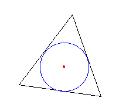

| Let's consider how to draw an inner center. |  |
Ho to use this applet1.Drag red point.2.Press "Define" button. 3.Check "1 Circle Mode" ,"2 Circles Mode" or "3 Circles Mode" . 4.Check "Blue Circle","Green Circle" or "Pink Circle" ,if you check "1 Circle Mode" . 5.Check "Blue and Green Circle","Green and Pink Circle" or "Pink and Blue Circle" ,if you check "2 Circles Mode" . 6.Drag red point. 7.Press "Init" button to go to the first step. |
|
|